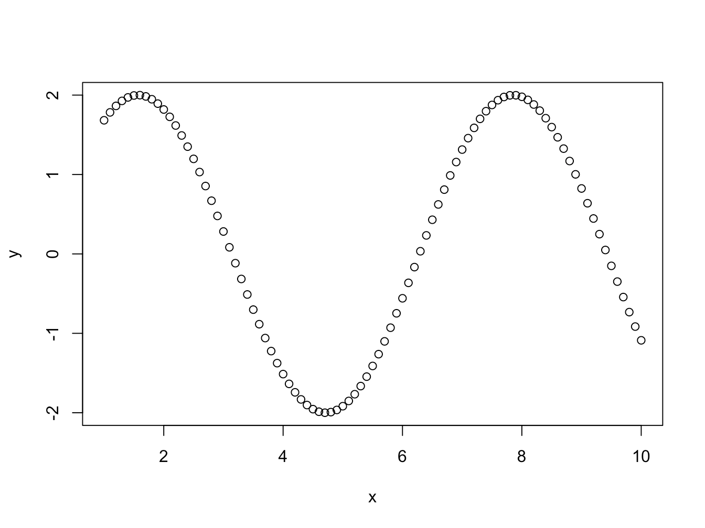
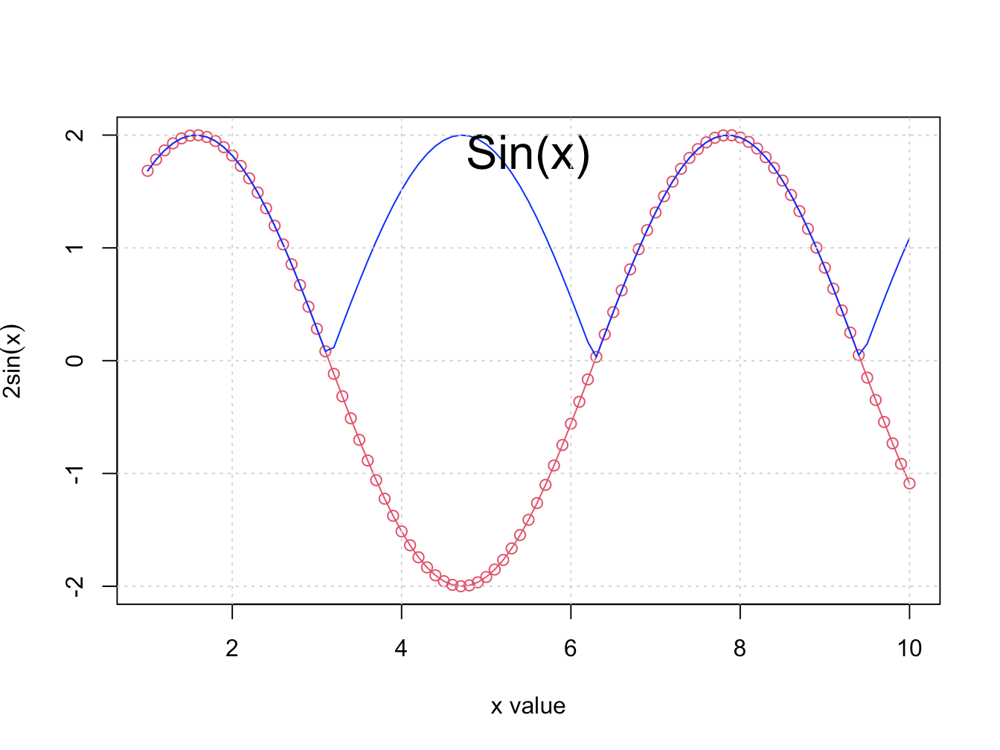
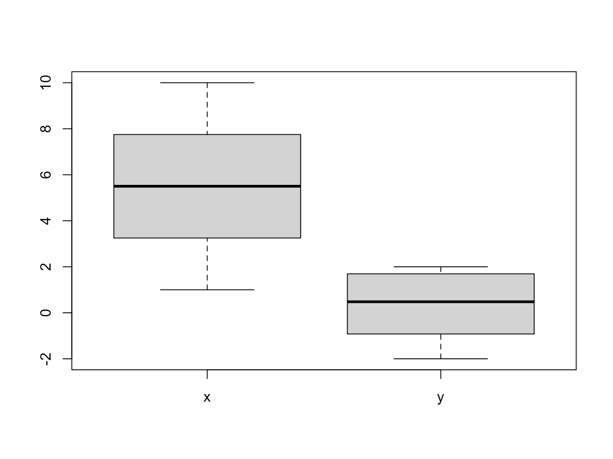
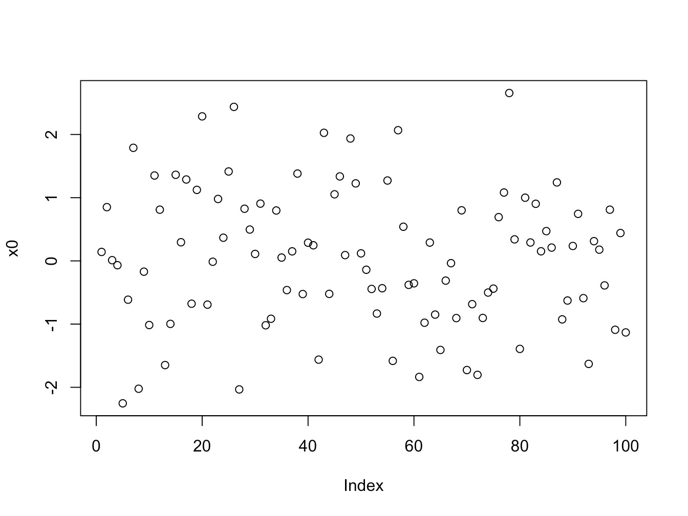
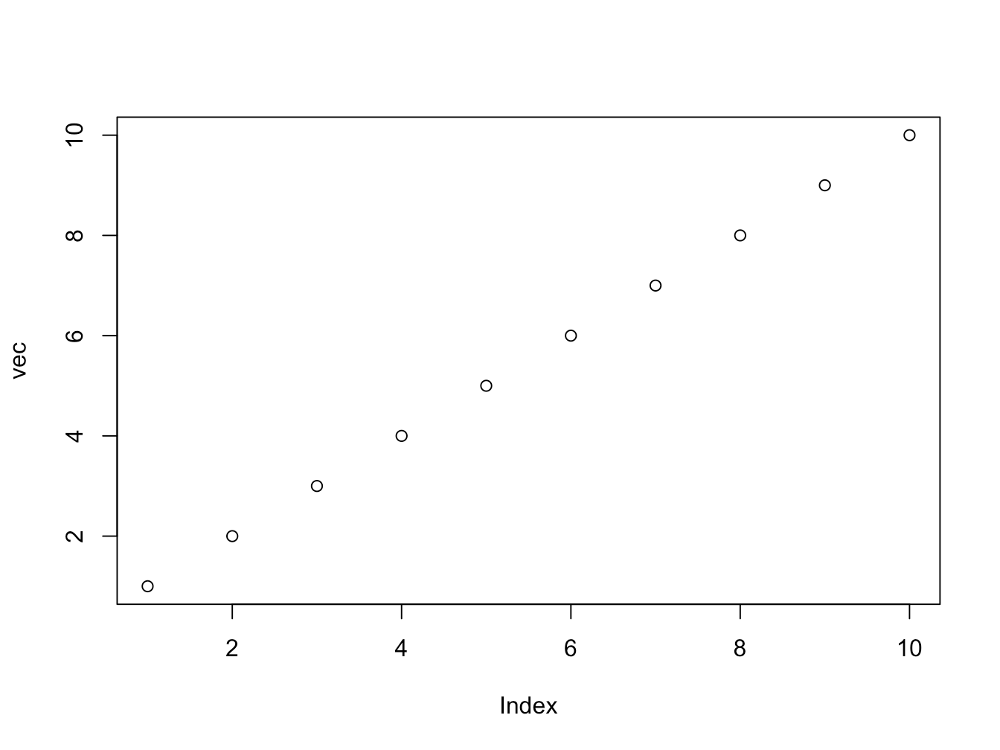
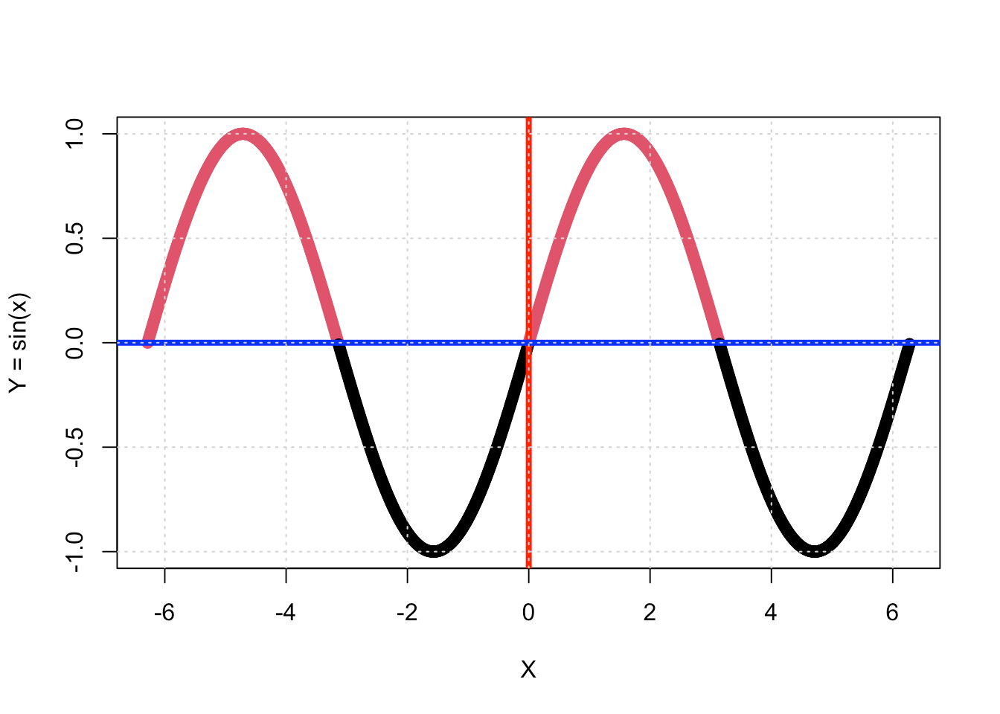
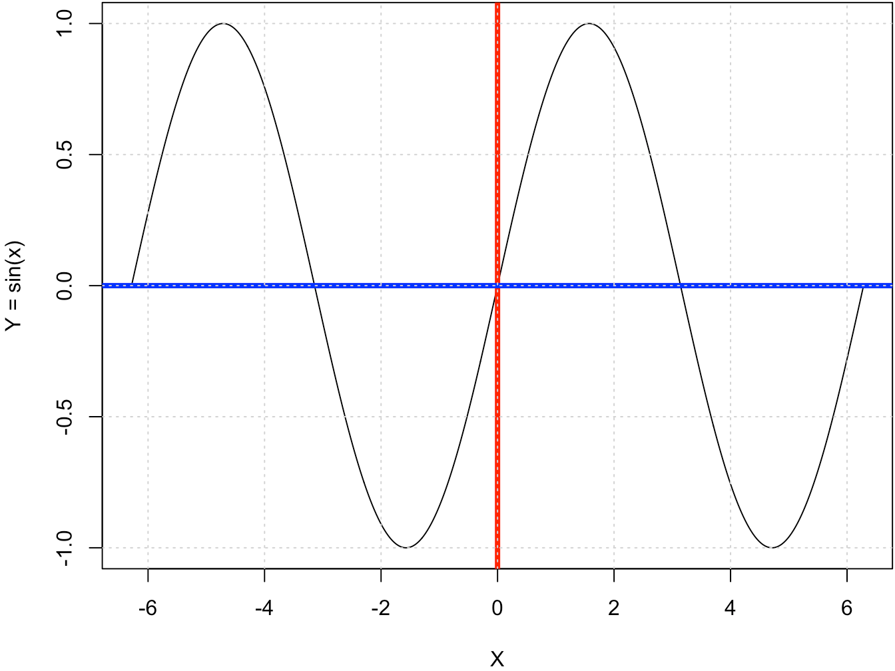
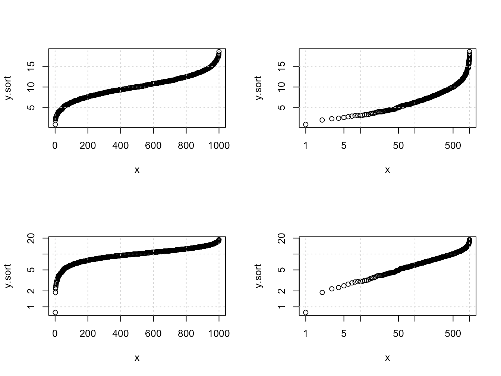

Chapter 2 R基础知识
2.1 编程基础语法
以下代码用于展示r的数据操作、基本数据结构和常用的函数。
x = seq(1, 10, by=0.1) # 生产一组数列，间隔为0.1
y = 2 * sin( x ) # 包含 Sin 函数
plot(x, y) # 绘制出(x,y)的曲线。
plot(x=x, y=y,
xlab='x value', ylab = bquote(2 * sin( x ) ), col=2,
type='o')
lines(x=x, y=abs(y), col='blue')
mtext(side = 3, text = 'Sin(x)', cex=2, line=-2)
grid()
length(x)## [1] 91mat.v = cbind(x, y)
mat.h = rbind(x, y)
boxplot(mat.v)
class(mat.v)## [1] "matrix" "array"dim(mat.v)## [1] 91 2dim(mat.h)## [1] 2 91nrow(mat.v)## [1] 91ncol(mat.v)## [1] 22.2 数据类型与结构
- 数字：numeric
即一维数组， 常用的函数
length,class等。
x0 = rnorm(100)
plot(x0)
- 数据框：data.frame
x=readRDS('Exercise/Data_RDS/JCR.RDS')
length(x)## [1] 6dim(x)## [1] 14492 6head(x) #前5组元素## c1
## 1 Acoustics
## 2 Acoustics
## 3 Acoustics
## 4 Acoustics
## 5 Acoustics
## 6 Acoustics
## name
## 1 Ultrasonics Sonochemistry
## 2 Ultrasound In Obstetrics & Gynecology
## 3 Ultraschall In Der Medizin
## 4 Ieee-acm Transactions On Audio Speech And Language Processing
## 5 Journal Of Sound And Vibration
## 6 Ieee Transactions On Ultrasonics Ferroelectrics And Frequency Control
## ISSN cites IF CR
## 1 1350-4177 17314 7.279 1
## 2 0960-7692 12336 5.595 1
## 3 0172-4614 2238 4.613 3
## 4 2329-9290 3110 3.531 2
## 5 0022-460X 36167 3.123 1
## 6 0885-3010 11266 2.989 1View(x)- 字符：character
levels(x$name)[1:5]## [1] ""
## [2] "2d Materials"
## [3] "3 Biotech"
## [4] "3d Printing And Additive Manufacturing"
## [5] "4or-a Quarterly Journal Of Operations Research"- 向量：vector
vec = cbind(1:10)
plot(vec) 1. 矩阵：matrix
x.mat = as.matrix(x)
class(x.mat)## [1] "matrix" "array"length(x.mat)## [1] 86952- 因子：factor
library(ggplot2)
head(levels(x$c1))## [1] "Acoustics" "Agricultural Economics & Policy"
## [3] "Agricultural Engineering" "Agriculture, Dairy & Animal Science"
## [5] "Agriculture, Multidisciplinary" "Agronomy"- 逻辑：logical
x = seq(-pi*2, pi * 2, by=0.01)
y = sin(x)
tf = (y > 0)
df = data.frame(x, y, tf)
plot(x, y, type = 'o', pch = 19, col = tf+1, xlab='X', ylab = 'Y = sin(x)')
abline(v = 0, col='red', lwd=4) #在x = 0处添加垂直线条，
abline(h = 0, col='blue', lwd=4) #在y = 0处添加水平线条，
grid() # 添加坐标网格
2.3 可视化
par(mar = c(4, 4, .1, .1)) # 绘图的四边边界
x = seq(-pi*2, pi * 2, by=0.01)
y = sin(x)
plot(x, y, type = 'l', pch = 19, xlab='X', ylab = 'Y = sin(x)')
abline(v = 0, col='red', lwd=4) #在x = 0处添加垂直线条，
abline(h = 0, col='blue', lwd=4) #在y = 0处添加水平线条，
grid() # 添加坐标网格

(#fig:fig.v1)R绘图结果
n=1000
x = 1:n
y = abs(rnorm(n, mean=10, sd=3))
y.sort = sort(y)
par(mfrow=c(2,2))
plot(x, y.sort, log=''); grid()
plot(x, y.sort, log='x'); grid()
plot(x, y.sort, log='y'); grid()
plot(x, y.sort, log='xy'); grid()

Figure 2.1: 绘图：排序的随机数